|
|
|
Setup:
Play starts
with a 5x5
grid of squares. First Cube, then Cylinder place
both their
men on unoccupied squares. The position at the right is a
typical
startining position, after the initial placement, the players alternate
turns. |
Moving:Each turn has two parts. First move one of your men to an adhacent space. The destination space must be unoccupied, and no more than one level higher than your starting height. If you cannot move, you lose.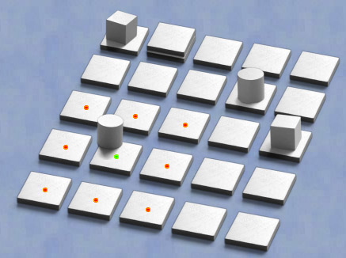
|
|
Building:The second part of each move is to place a new tile adjacent to the man which just moved. You can place in any unoccupied square.. 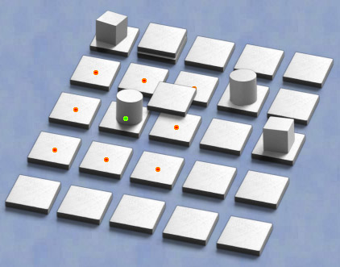 |
Building Domes:A square placed on level 3 (making it 4 above the base) is immediately replaced by a dome (see below). Domes cannot be moved onto or built upon. |
|
Winning:The normal way to win is to move one of your men to stand on level 3 |
Also Winning:The other way to win is to box in your opponent so he cannot move. |
|
| 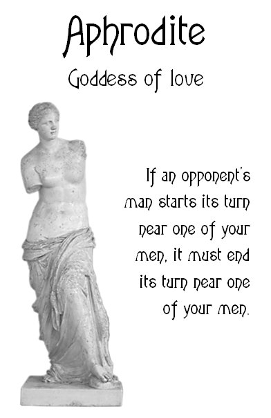 | 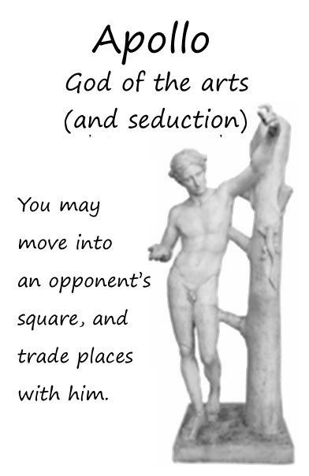 | 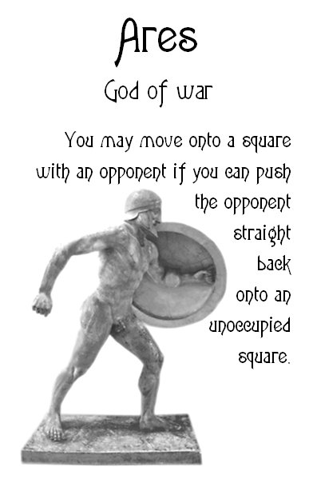 |
| 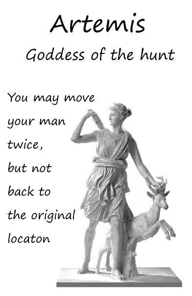 | 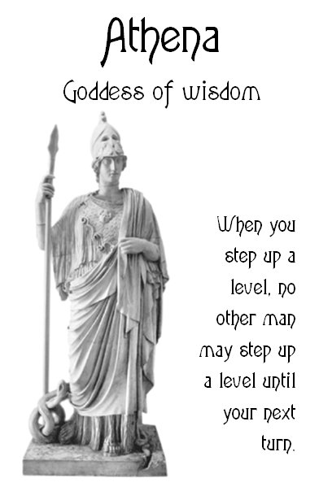 | 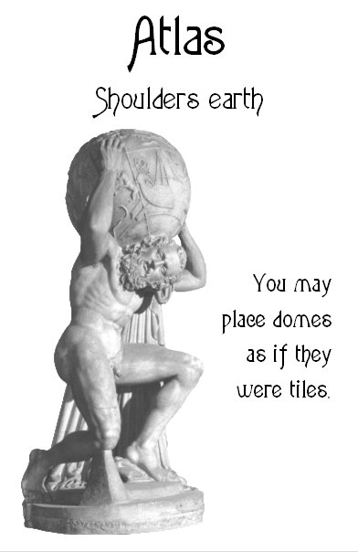 |
| 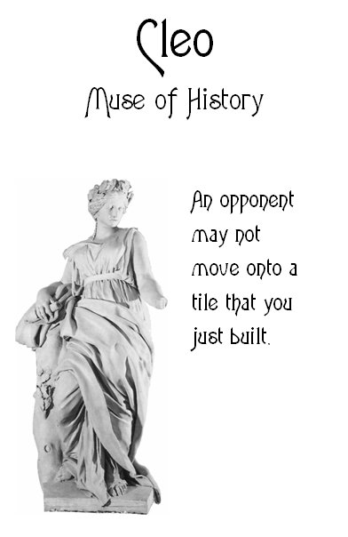 | 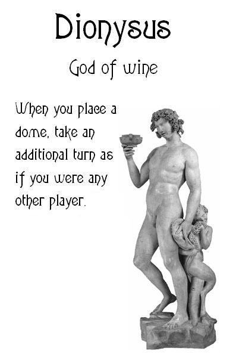 | 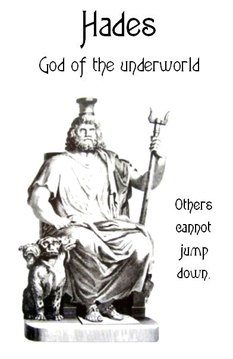 |
| 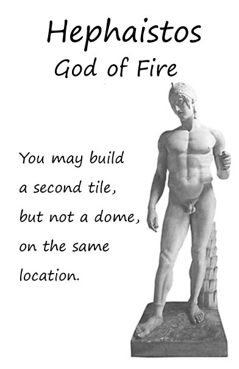 | 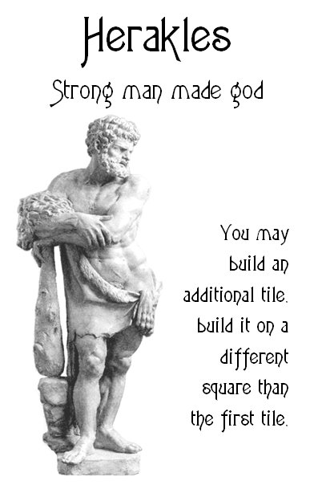 | 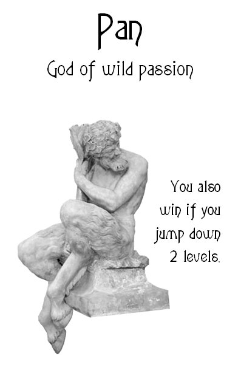 |
| 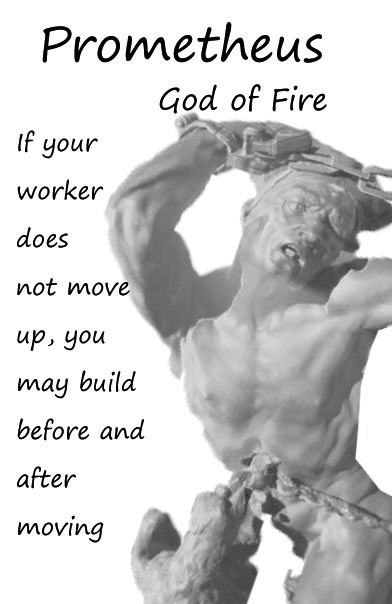 |
| E-Mail: | Go to BoardSpace.net home page |